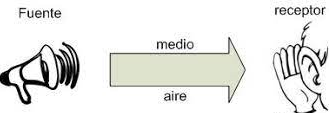

La velocidad con que se transmite el sonido depende, principalmente, de la elasticidad del medio, es decir, de su capacidad para recuperar su forma inicial. El acero es un medio muy elástico, en contraste con la plastilina, que no lo es. Otros factores que influyen son la temperatura y la densidad.
El sonido se Transmite en cualquier medio ya sea solido, liquido o gaseoso, pero no en el vació.
Cuando se produce la vibración sonora, el sonido no llega a nuestros oídos de inmediato, sino que tiene que encontrar un camino para poder llegar.
Los medios son:
AIRE: cuando hablamos el sonido se transmite por el aire.
AGUA: las ballenas transmiten sus sonidos a través del agua.
SÓLIDOS: golpeando la madera con los dedos, se transmite por medio sólido.

Prodrias ver este video para poder entender mas sobre el tema